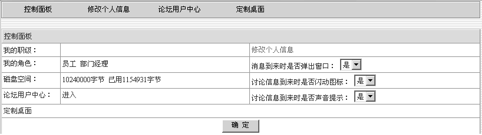
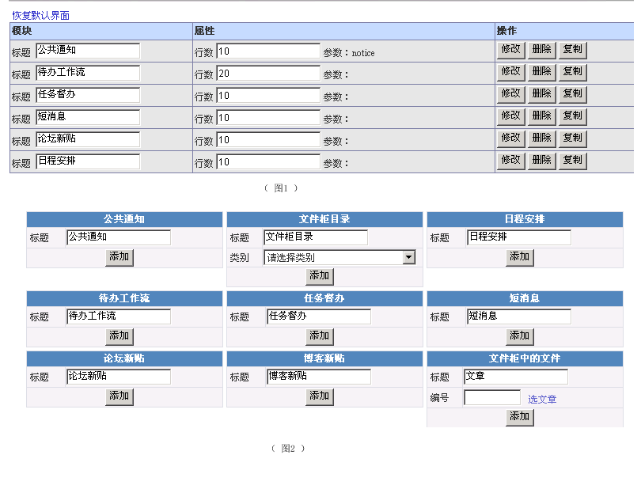

控制面板 |
| 通过控制面板可以对“消息到来时是否弹出窗口”、“计论消息到来时是否闪动图标”、“讨论信息到来时是否声音提示”、“修改个人信息”、“定制桌面”等进行统一管理。 |
| 登陆方法 |
| 用户登陆后，点击功能菜单“个人助理”→ “控制面板” |
| 控制面板快捷界面 |
| 您可以通过这个界面对整个控制面板的功能有个整体的了解。其中“控制面板”可查看您的基本信息以及各个功能的快捷导航按钮。 |
|  |
| 我的职级、我的角色、磁盘空间是显示个人的基本信息。可以点击“修改个人信息”来修改本人的一些基本信息。 |
| 点击“个人助理”下“控制面板” 后，进入“定制桌面”如下图所示： |
 |
图1 显示的是桌面上已定制的模块，点击相应按钮可到已定制的模块进行管理。 |
| 图2 显示的是需用要生成桌面模块的功能。例：如需在“我的办公桌” 定制“公共通知”只需输入标题，然后点击“添加”按钮就可以了。 |